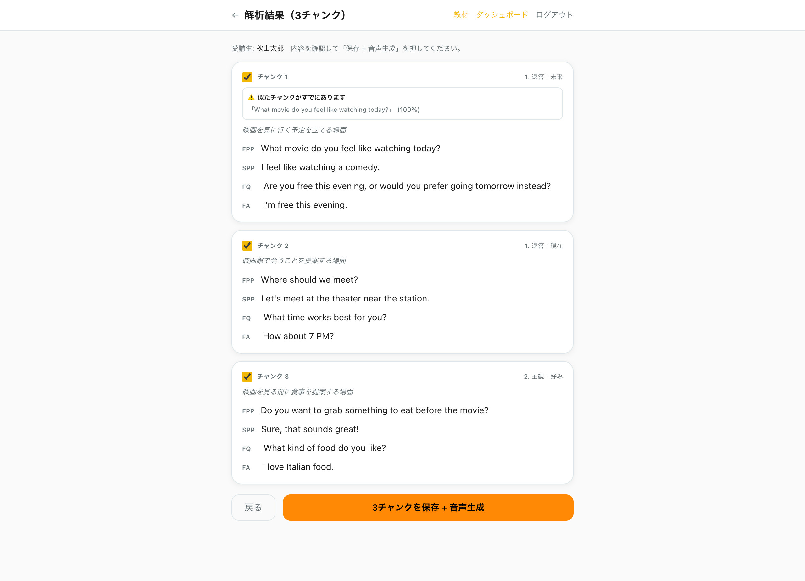
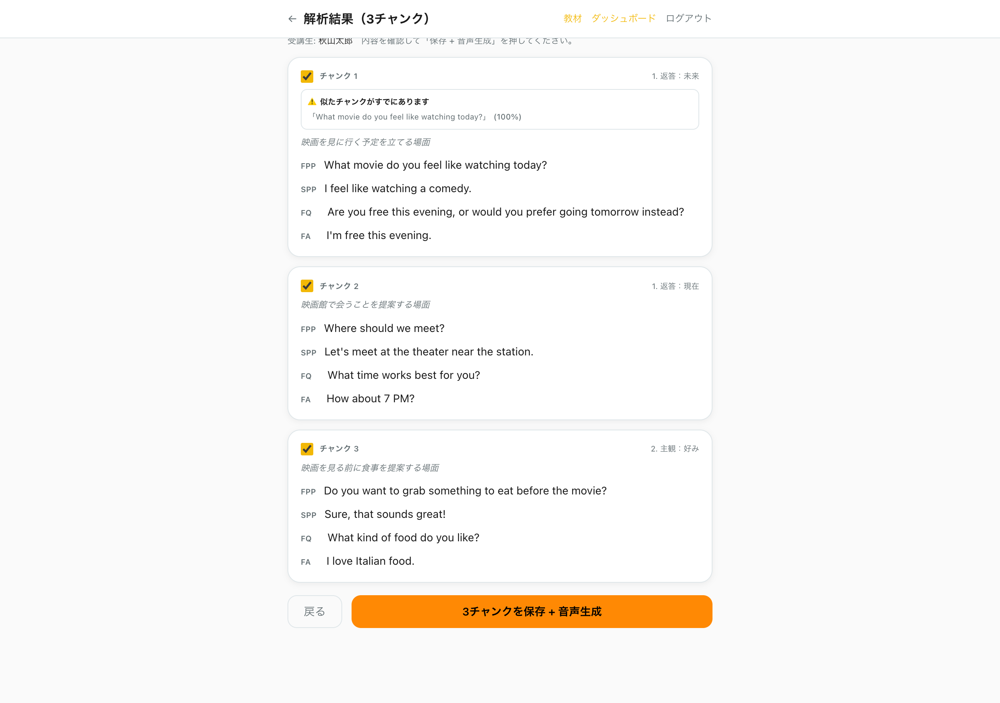
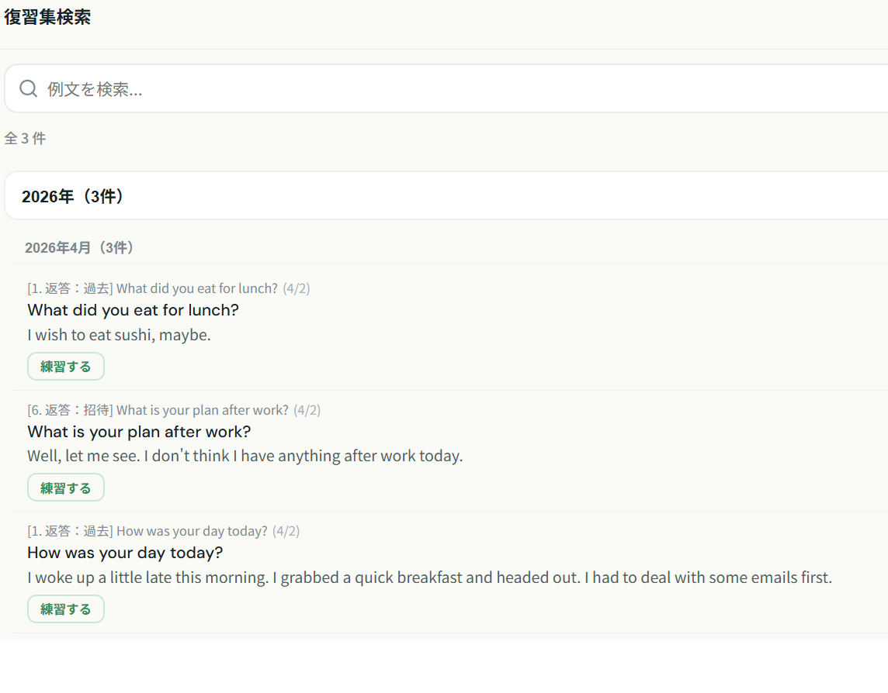

ペラトレ教材生成システム
操作マニュアル
レッスン後に先生がフォームに入力するだけで、
受講生専用の練習教材が自動で作成されます。
全体の流れ
1
ログイン
先生用パスワードでログインします
2
受講生を選んでレッスンメモを入力
レッスンで話した内容を自由に書くだけ
3
AIが自動で教材フォーマットに変換
situation / trigger / 模範回答 / フォローが自動生成されます
4
チャンクを選んで保存
内容を確認して保存。音声も自動生成されます
※原則レッスン終了後1時間以内に作成
※原則レッスン終了後1時間以内に作成
1
ログイン
以下のURLにアクセスして、パスワードを入力してログインします。
先生用ログインページ
https://peratore-dashboard.vercel.app/teacher/login

パスワードを入力して「ログイン」ボタンを押します。パスワードはMasaさんから共有されたものを使ってください。
ログインするとレッスン後フォームのページに自動で移動します。
ログイン状態はブラウザに記憶されます。一度ログインすれば、次からはパスワード入力なしでアクセスできます。
2
レッスン後フォームの使い方
レッスンが終わったら、このフォームで受講生の名前とレッスンメモを入力するだけです。あとはAIが自動で教材フォーマットに整えてくれます。
STEP 1: 受講生を選ぶ

受講生名の欄をクリックして、氏名を入力すると候補が表示されます。該当する受講生を選んでください。
リストに受講生の名前が出ない場合は運営に連絡をしてください。
STEP 2: レッスンメモを入力する

レッスンメモに、レッスンで話した内容を自由に書きます。日本語でも英語でもOKです。
長い内容を入力した場合は、AIが自動で複数のチャンク（会話のかたまり）に分割してくれます。
書き方のコツ: 「相手が何を言って、受講生が何を返したか」が伝わるように書くと、AIの解析精度が上がります。ただし雑なメモでも大丈夫です!
メモの例:
「週末の予定を聞かれた。What are you doing this weekend? に対して stay home と言いたかった。フォローで Netflix と聞かれた。」
メモの例:
「週末の予定を聞かれた。What are you doing this weekend? に対して stay home と言いたかった。フォローで Netflix と聞かれた。」
STEP 3: 「解析して確認」ボタンを押す
「解析して確認」ボタンを押すと、AIがメモを解析してプレビュー画面を表示します。20文字以上の入力が必要です。
ボタンを押した後、AIの解析には数秒〜10秒ほどかかります。そのまま待ってください。
3
AI解析結果の確認
AIがレッスンメモを解析すると、チャンク（会話のかたまり）ごとに分割された結果が表示されます。各チャンクの内容を確認して、保存するものを選びましょう。

各チャンクには以下の情報が自動生成されています:
FPP = First Pair Part（相手のセリフ。会話のきっかけとなる一言）
SPP = Second Pair Part（模範回答。受講生が返すべきセリフ）
FQ = Followup Question（相手からの追加質問）
FA = Followup Answer（追加質問への回答）
FPP = First Pair Part（相手のセリフ。会話のきっかけとなる一言）
SPP = Second Pair Part（模範回答。受講生が返すべきセリフ）
FQ = Followup Question（相手からの追加質問）
FA = Followup Answer（追加質問への回答）
使いたいチャンクのチェックボックスをONにします。全部使っても、一部だけでもOKです。チェックを外せばそのチャンクは保存されません。
「似たチャンクが既にあります」という警告が出た場合、その受講生にすでに似た内容の教材が登録済みです。重複になるので、チェックを外してもOKです。
確認ポイント: SPP（模範回答）が自然かどうかをチェックしてください。不自然に感じたら、保存後に修正できます（Section 6参照）。

チャンクを選択したら、下にある「保存 + 音声生成」ボタンを押します。音声が自動生成され、受講生の専用ページに即反映されます。
4
受講生リンク一覧
全受講生のリストが表示されるページです。ここから受講生の専用ページを確認したり、例文の修正画面に移動できます。
受講生リンク一覧ページ
https://peratore-dashboard.vercel.app/teacher/students

検索バーで名前・ふりがなを入力して受講生を絞り込めます。受講生が多い場合に便利です。
受講生名をクリックすると、その受講生の例文一覧・修正ページに移動します。
「専用ページ →」で受講生の練習ページを直接開けます。
5
受講生の例文を修正する
受講生リンク一覧から受講生名をクリックすると、その受講生に割り当てられた全ての例文が表示されます。ここで内容の修正や削除ができます。

各フィールド（Situation、FPP、SPP、FQ、FA）のテキストを直接クリックして編集できます。修正したい箇所をクリックして書き換えてください。
T / S / FQ / FA ボタンを押すと、そのフィールドの音声を個別に再生して確認できます。
修正したら必ず「保存 + 音声再生成」ボタンを押してください。テキストと音声が一緒に更新されます。
「削除」ボタンで、その例文を完全に削除できます。削除すると受講生の専用ページからも消えます。
例文を修正すると音声も自動で再生成されます。修正したら「保存 + 音声再生成」を押すのを忘れずに!
6
受講生の専用ページを確認する
受講生の専用ページを開くと、先生が追加した教材がどう表示されるかを確認できます。受講生と全く同じ画面が見えます。

「2026年4月復習集」カテゴリに、先生が追加した教材が表示されます。受講生はこのカテゴリを選んで練習できます。
それ以下のカテゴリは全受講生共通のベース教材です。全員が同じ内容で練習します。先生が追加した個別教材とは別物です。
受講生が専用ページを開くと、先生が追加した教材と共通のベース教材の両方が一つのページにまとまって表示されます。受講生は特別な操作なしで、追加された教材で練習できます。
7
復習集検索の使い方
受講生の専用ページにある「復習集検索」ボタンを押すと、レッスンで追加した例文を一覧で確認できます。気になる例文を選んで、そのままその例文だけで練習することもできます。

例文は追加日（年・月）ごとにグループ分けされています。最近追加したものが上に表示されます。
上部の検索バーにキーワードを入力すると、例文の内容で絞り込みができます。
各例文の「練習する」ボタンを押すと、その例文だけのPattern Practiceが始まります。練習が終わると自動で復習集検索の画面に戻ります。
復習集検索は受講生の専用ページ（practice-v2.html?student=〇〇）から使えます。先生も同じURLで動作を確認できます。
8
よくある質問
同じ受講生に複数回教材を追加できますか?
はい、できます。追加するたびに同じ受講生の専用ページに自動で追加されます。URLも変わりませんので、最初に送ったリンクのまま使えます。
「似たチャンクが既にあります」と警告が出ました。
その受講生にすでに似た内容の教材が登録済みということです。重複になるので、そのチャンクのチェックを外してもOKです。もちろん、あえて追加したい場合はチェックしたまま保存しても大丈夫です。
音声がおかしい場合はどうすればいい?
受講生の例文修正ページ（Section 5）で英文を微修正して「保存 + 音声再生成」を押してください。音声が再生成されます。
9
注意事項
よくある間違い
- 先生用URLと受講生用URLを混同しない — 先生用ページ（/teacher/...）と受講生用ページ（/practice-v2.html?student=...）は別物です。受講生にはログインURLを送らないでください
- チャンクを1つも選択しないまま保存を押さない — AI解析後、使いたいチャンクにチェックを入れてから「保存」を押してください
- 例文を修正したら「保存 + 音声再生成」を忘れない — テキストを書き換えただけではページから移動すると消えてしまいます。必ず保存ボタンを押してください
困ったときは
操作で分からないことがあれば、Slackの「英会話講師-業務連絡用」チャンネルに連絡してください。
例文の内容に問題があった場合は、受講生リンク一覧から修正できます。
レッスン方法の流れ
1回のレッスン（50分）の標準的な進め方です。
5
分
アイスブレイクトーク
最近の出来事や近況など、自由に話してウォームアップ
20
分
パターンプラクティス
受講生の専用ページを使って例文を繰り返し練習
15
分
フリートーク
テーマを決めずに自由に英会話。練習した表現を使う機会に
10
分
日本語ケア
レッスンの振り返り・気になった表現の確認・次回の目標設定
50
分合計